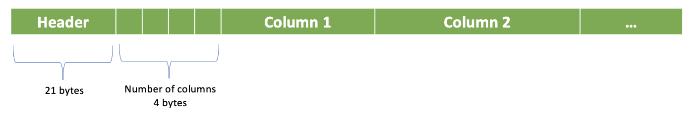
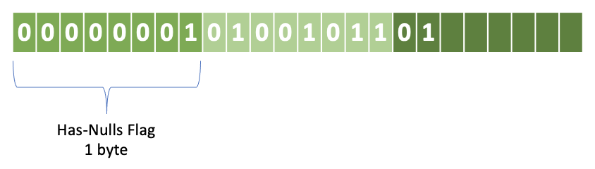
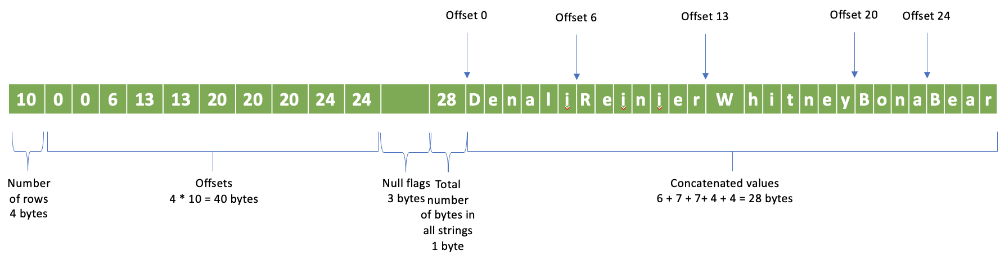
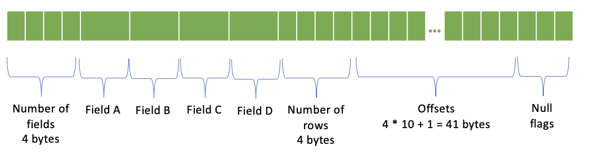

SerializedPage Wire Format¶
Presto uses SerializedPage binary columnar format for exchanging data between stages.
The data can be compressed, encrypted and include a checksum. The layout is a header followed by a number of columns, followed by individual columns.
{kind=link}
Header¶
The header includes:
Field |
Size |
|---|---|
Number of rows |
4 bytes |
Codec |
1 byte |
Uncompressed size |
4 bytes |
Size |
4 bytes |
Checksum |
8 bytes |
Codec is a set of flags, one bit per flag. * 1st bit set if data is compressed * 2nd bit set if data is encrypted * 3rd bit set if checksum is included
Size is the size of the payload after the header. If data is not compressed, size and uncompressed size are the same. If data is compressed, size is the size of the compressed data and uncompressed size is the size of the data before compression.
Checksum is an CRC32 computed over the following bytes in the specified order: * Data after the header * Codec (1 byte) * Number of rows (4 bytes) * Uncompressed size (4 bytes) Checksum must be zero if codec doesn’t have Checksummed bit set.
Note: Number of columns is not part of the header. It is stored in 4 bytes directly after the header.

Columns¶
Each column starts with a header. The data follows.
Column Header¶
The column header specifies the encoding of the column.
Length of the encoding name - 4 bytes
Name of the encoding
The supported encodings and mappings for Presto types are:
Encoding Name |
Presto Types |
|---|---|
BYTE_ARRAY |
BOOLEAN, TINYINT, UNKNOWN |
SHORT_ARRAY |
SMALLINT |
INT_ARRAY |
INTEGER, REAL |
LONG_ARRAY |
BIGINT, DOUBLE, TIMESTAMP |
INT128_ARRAY |
Not used |
VARIABLE_WIDTH |
VARCHAR, VARBINARY |
ARRAY |
ARRAY |
MAP |
MAP |
MAP_ELEMENT |
n/a |
ROW |
ROW |
DICTIONARY |
n/a |
RLE |
n/a |
See presto-common/src/main/java/com/facebook/presto/common/block/BlockEncodingManager.java
For example, the header for an INTEGER column describes INT_ARRAY encoding. The length of the encoding name is 9, hence, the first 4 bytes will be 0 0 0 9. The following 9 bytes store the INT_ARRAY string.
{kind=link}
Null Flags¶
All columns include the 1-byte has-nulls flag. 0 means no nulls. 1 means may have nulls. If has-nulls byte is 1, individual null flags are specified in the following bytes using 1 bit per flag. 0 means the value is not null. 1 means the value is null.
Has-nulls flag - 1 byte
[optional] Null flags - number of rows / 8 bytes; 1 bit per flag; the bits are stored in bytes in reverse order; the first flag in each byte is the high bit.
Let’s say we have 10 rows with nulls in zero-based rows 1, 4, 6, 7, 9. The null flags will be represented with 3 bytes. First byte stores the has-null flag: 1. Second byte stores null flags for the first 8 rows. Third byte stores null flags for the last 2 rows.
{kind=link}
XXX_ARRAY Encodings¶
BYTE_ARRAY, INT_ARRAY, SHORT_ARRAY, LONG_ARRAY and INT128_ARRAY encodings differ only by the number of bytes used per value.
The data layout is:
Number of rows - 4 bytes
Null flags
Values - (number of rows - number of nulls) * <number of bytes per value> bytes; only rows with non-null values are represented
The number of bytes per value is:
Encoding Name |
Number of bytes per value |
|---|---|
BYTE_ARRAY |
1 |
SHORT_ARRAY |
2 |
INT_ARRAY |
4 |
LONG_ARRAY |
8 |
INT128_ARRAY |
16 |
Let’s take the example from the Null Flags section and say that we have an integer column with 10 rows with nulls in zero-based rows 1, 4, 6, 7, 9. We’ll have 4 bytes storing the number of rows: 10, followed by 3 bytes of null flags, followed by 20 bytes representing 5 non-null integer values for rows 0, 2, 3, 5, 8..

VARIABLE_WIDTH Encoding¶
Number of rows - 4 bytes
Offsets - number of rows * 4 bytes; 4 bytes per offset
Null flags
Total number of bytes in all values - 4 bytes
Concatenated values
Let’s again take the example from the Null Flags section and say that we have a string column with 10 rows with nulls in zero-based rows 1, 4, 6, 7, 9. The non-null rows will have values: 0 - Denali, 2 - Reinier, 3 - Whitney, 5 - Bona, 8 - Bear. We’ll have 4 bytes storing the number of rows: 10, followed by 40 bytes of offsets, followed by 3 bytes of null flags, followed by 1 bytes storing total size of all strings: 28, followed by the concatenated string values. Notice that we have offsets for all rows, not just the non-null rows.
{kind=link}
ARRAY Encoding¶
Elements column
Number of rows - 4 bytes
Offsets - (number of rows + 1) * 4 bytes; 4 bytes per offset
Null flags
An array column with 10 rows is represented like this:

MAP Encoding¶
Keys column
Values column
Hash table size (number of 4-byte chunks in the Hash table) - 4 bytes
[optional] Hash table: <Hash table size> * <4 bytes>
Number of rows - 4 bytes
Offsets - (number of rows + 1) * 4 bytes; 4 bytes per offset
Null flags
A map column with 10 rows is represented like this:

ROW Encoding¶
Number of fields - 4 bytes
One column per field
Number of rows - 4 bytes
Offsets - (number of rows + 1) * 4 bytes; 4 bytes per offset
Null flags
Nested columns are serialized only for non-null rows. In the presence of null rows, the row numbers of the nested columns don’t match the top-level row numbers. Offsets are specifying the row numbers of the nested columns.
Let’s again take the example from the Null Flags section and say that we have a column of type ROW(a, b, c, d) with 10 rows with nulls in zero-based rows 1, 4, 6, 7, 9. Nested columns will have only 5 rows and offsets will be: 0, 0, 1, 2, 0, 3, 0, 0, 4, 0. Offsets for null rows are zero.
Note: Offsets are redundant information as they can be reconstructed from the null flags.
{kind=link}
DICTIONARY Encoding¶
Number of rows - 4 bytes
Dictionary values column. This column itself is a serialized block whose encoding can be any of the encodings mentioned in this document.
Indices - number of rows * 4 bytes; 4 bytes per index
Dictionary ID - 24 bytes
RLE Encoding¶
Number of rows - 4 bytes
Single-row constant value column
Additional Usage¶
SerializedPage format is also used to specify constant values in the plan fragment sent from the coordinator to the workers. In this case, the binary representation is converted to an ASCII string using base64 encoding.
For example, the plan for the SELECT array[1, 23, 456] query includes a Project node with array[1, 23, 456] value represented as base64 encoded binary of the SerializedPage format.
- Project[projectLocality = LOCAL] => [expr:array(integer)]
Estimates: {rows: 1 (51B), cpu: 51.00, memory: 0.00, network: 0.00}
expr := [Block: position count: 3; size: 92 bytes]
Also, this format is used to store intermediate data when session property exchange_materialization_strategy is ALL and temporary_table_storage_format is PAGEFILE.